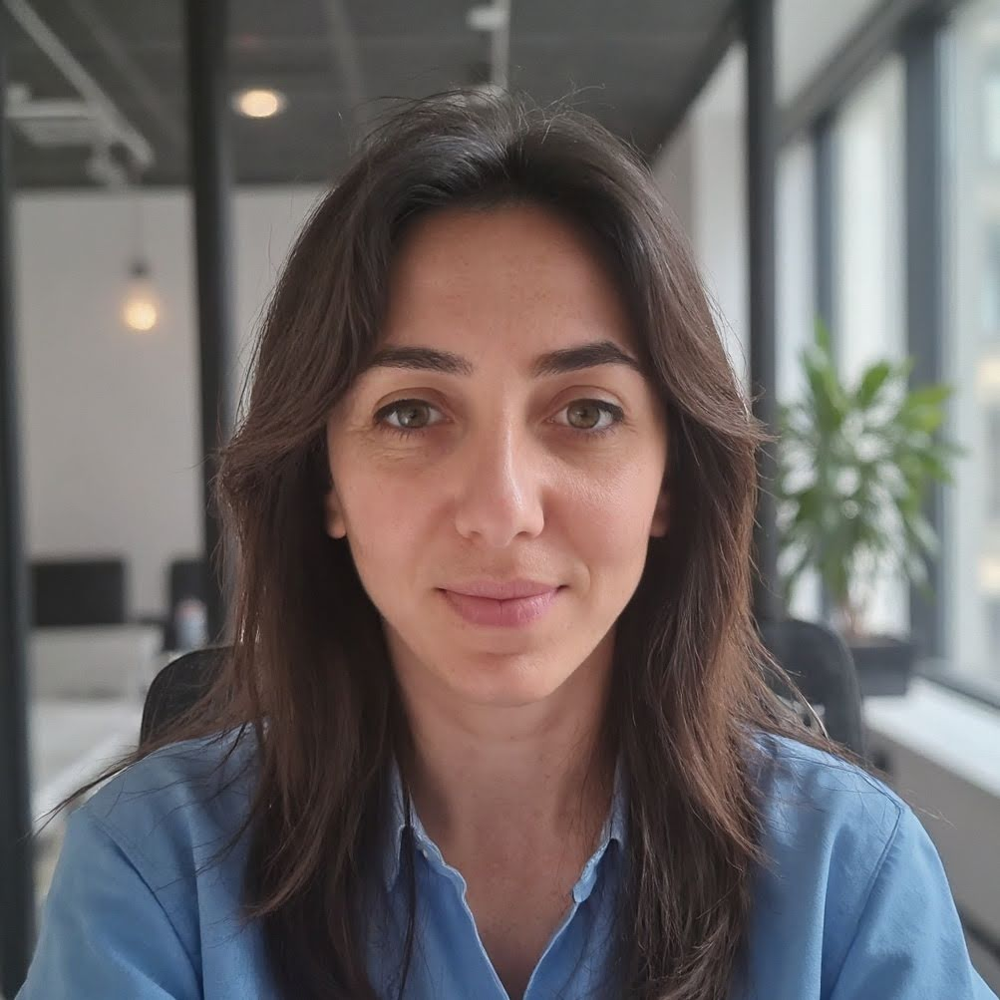

CREO VALORE DOVE GLI ALTRI VEDONO COMPLESSITÀ
Aiuto le aziende a creare e redistribuire valore attraverso l’ottimizzazione dei processi, l’attrazione di nuovi mercati, l’integrazione di strumenti innovativi e il miglioramento dell’efficienza digitale.
Come posso aiutarti?
Ogni sfida digitale ha una soluzione. Il modo migliore per trovarla è partire da una domanda concreta.


Martina Ria
Sono un’Innovation Manager specializzata in trasformazione digitale e consulenza per l’innovazione. Il mio obiettivo è aiutare le aziende a creare o redistribuire valore ottimizzando processi, integrando strumenti innovativi e migliorando l’efficienza digitale.
Il modo migliore per affrontare la trasformazione digitale è avere al tuo fianco un consulente che conosce sia la tecnologia che il business, capace di tradurre la complessità in soluzioni fluide e concrete.
Strategia digitale, gestione di progetti complessi, integrazione di AI e automazioni: accompagno le aziende in percorsi di innovazione misurabile, con un approccio concreto e orientato ai risultati.
Casi Studio
Progetti che hanno generato impatto misurabile. Dalla sfida alla soluzione, fino ai risultati concreti.
Processi manuali e dispersione documentale causavano ritardi operativi e perdita di dati critici.
Implementazione di un sistema di workflow automation integrato con gestionale ERP esistente, utilizzando tecnologie low-code e API custom.
- Riduzione del 65% dei tempi di elaborazione ordini
- Eliminazione totale degli errori di inserimento dati
- ROI raggiunto in 8 mesi
Necessità di piattaforma e-commerce scalabile per gestire catalogo di 50.000+ prodotti con prezzi personalizzati per cliente.
Sviluppo di piattaforma e-commerce custom con integrazione real-time al gestionale, ottimizzazione SEO tecnica e sistema di pricing dinamico.
- Incremento del 180% nelle vendite online
- Tempo di caricamento pagine < 1.2s
- 4.500+ ordini mensili automatizzati
Volume crescente di richieste cliente con team di supporto saturo e tempi di risposta lunghi.
Implementazione di Agente AI conversazionale integrato con knowledge base aziendale, escalation automatica ai team umani per casi complessi.
- 70% delle richieste gestite autonomamente dall’AI
- Tempo medio di risposta ridotto a < 2 minuti
- Customer satisfaction +35%
Cosa dicono i clienti
“Martina ha trasformato completamente il nostro approccio alla digitalizzazione. In 6 mesi abbiamo automatizzato processi che ci facevano perdere ore ogni giorno. Il ROI è stato immediato.”
Domande Frequenti
Le risposte alle domande più comuni sulla trasformazione digitale e i servizi di Innovation Management.
Un Innovation Manager è un professionista che guida le aziende nella trasformazione digitale, identificando opportunità di innovazione e implementando soluzioni concrete. Il modo migliore per capire se la tua azienda ne ha bisogno è valutare se i tuoi processi sono efficienti, se sfrutti le tecnologie più adatte e se la tua strategia digitale è allineata agli obiettivi di business.
L’AI permette di automatizzare attività ripetitive, migliorare la qualità delle decisioni e liberare tempo per attività a maggior valore aggiunto, aumentando efficienza e scalabilità.
Dipende da budget, specificità delle esigenze, competenze interne e tempistiche. Un’analisi strutturata dei trade-off è fondamentale per prendere la decisione corretta.
Iniziamo a parlare
Hai un progetto in mente o vuoi esplorare nuove possibilità per la tua azienda? Scegli il modo che preferisci per contattarmi.